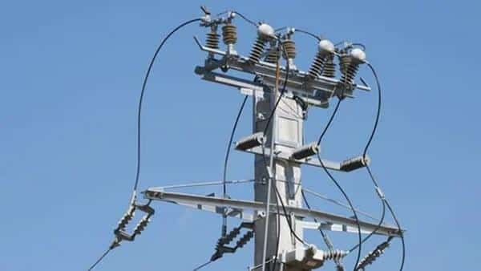
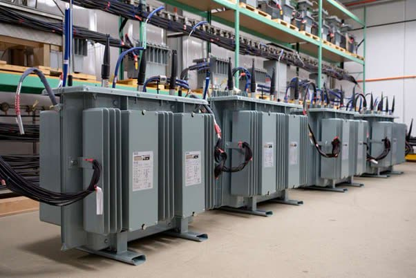
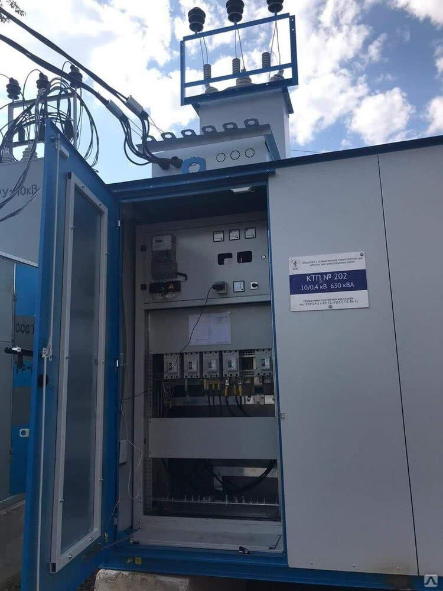

РАЗДЕЛ 13 · 6 ВИДОВ РАБОТ · ООО «GREEN ECO ENGINEERING» · ИНН 303724307
Высоковольтные работы
Монтируем и обслуживаем оборудование подстанций: комплектные трансформаторные подстанции, ячейки, силовые трансформаторы и высоковольтные кабельные линии. Все работы — аттестованным персоналом с оформлением нарядов-допусков.




Состав работ
Что входит в направление
- 13.01 Монтаж ТП и КТП
- 13.02 Монтаж высоковольтных ячеек
- 13.03 Монтаж силовых трансформаторов
- 13.04 Прокладка высоковольтных кабелей
- 13.05 Высоковольтные испытания
- 13.06 Обслуживание подстанций
Что получает заказчик
- ТП или КТП, введённая в эксплуатацию: акт допуска Государственной инспекции по надзору в электроэнергетике (Узгосэнергонадзор) и паспорт объекта на руках.
- Протоколы испытаний кабеля, трансформатора и РЗА — сетевая организация принимает без замечаний.
- Отключение по согласованному графику: работы укладываются в выданное окно, производство не теряет смену.
Типовые объекты
Промышленные предприятия, ТП 6/10/0,4 кВ, КТП на стройплощадках, насосные и водозаборы, тепличные комплексы, логистические центры, реконструкция подстанций
Вопросы по направлению
Что спрашивают до заказа
Есть ли у вас допуск на работы в электроустановках выше 1000 В?
Да. Бригады аттестованы, есть персонал с группой по электробезопасности до V и допуском к работам в электроустановках до 110 кВ. Работы ведём по наряду-допуску, со снятием напряжения, а все переключения оформляем с сетевой организацией и вашим оперативным персоналом.
Как часто нужно испытывать высоковольтный кабель и силовой трансформатор?
Кабельные линии 6–10 кВ испытываем повышенным напряжением после монтажа и после капитального ремонта, дальше — по нормам испытаний электрооборудования и графику предприятия: линии в тяжёлых условиях (агрессивный грунт, частые повреждения) — раз в год, остальные — раз в 2–3 года. Кабели с изоляцией из сшитого полиэтилена испытываем напряжением сверхнизкой частоты 0,1 Гц: выпрямленным напряжением их испытывать нельзя. По силовому трансформатору периодичность зависит от мощности и класса напряжения: сокращённый анализ масла — от раза в год для 35 и 110 кВ до раза в 3 года для распределительных трансформаторов 6/10 кВ. Точный график собираем по вашему парку оборудования с учётом требований завода-изготовителя.
Электроснабжение и монтаж
Все направления работ
Контакты
Пришлите однолинейную схему или ТЗ — посчитаем объём
Смотрим документы, при необходимости выезжаем на объект и даём смету с разбивкой по позициям. Коммерческое предложение — за 1–2 рабочих дня.
+998 90 918 31 26
info@greeneco.uz
Аварийная служба 24/7
- Телефон
- +998 90 918 31 26
- Почта
- info@greeneco.uz
- Адрес
- Ташкент, Янгихаётский район, МФЙ Файзли, ул. Райхон, 107
- Режим работы
- Пн–Сб, 09:00–18:00
- ИНН / STIR
- 303724307